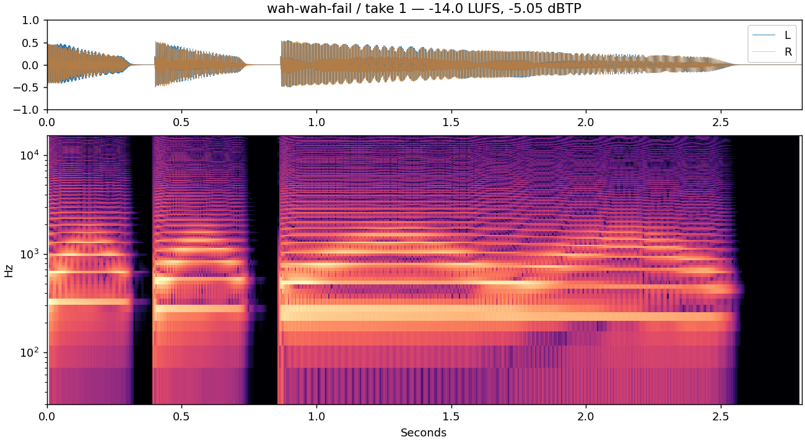
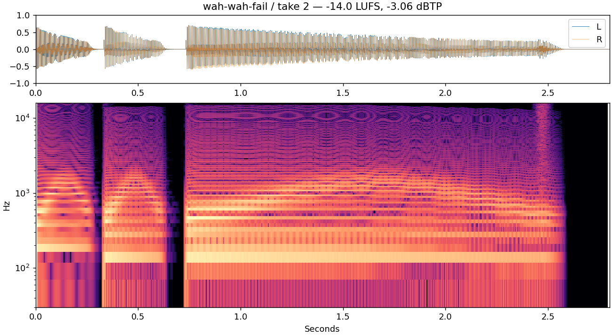
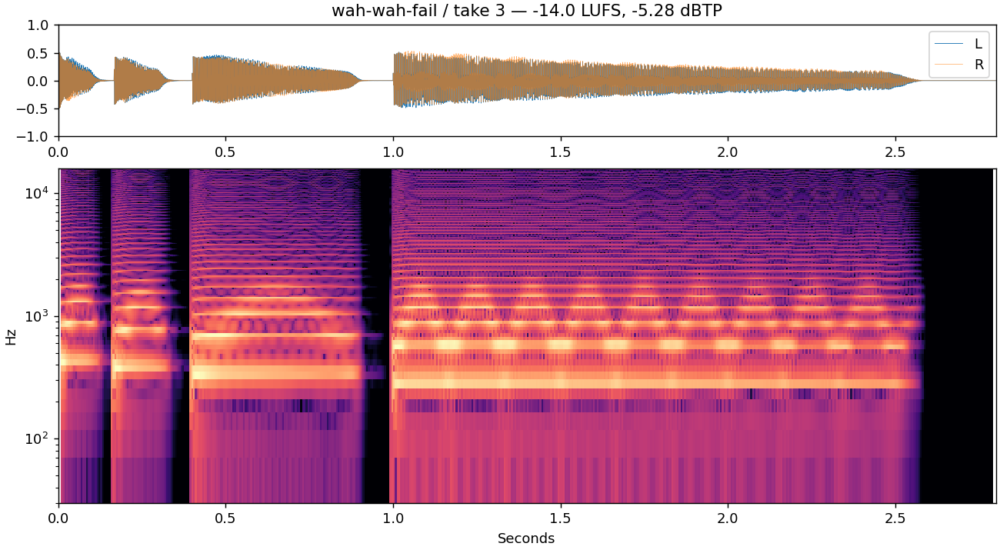

Take 1E4 at frame 0, C-sharp4 at 12, C4 at 26 with minor-third final droop.
-5.05 dBTP · seed 42WAV · Python
Spectrogram

G3 at frame 0, D3 at 10, E-flat3 at 22 sliding toward C3, ending lip buzz.
-3.06 dBTP · seed 43WAV · Python
Spectrogram

A4 at 0, G4 at 5, F4 at 12, D4 at 30 with talking-mute flutter.
-5.28 dBTP · seed 44WAV · Python
Spectrogram
